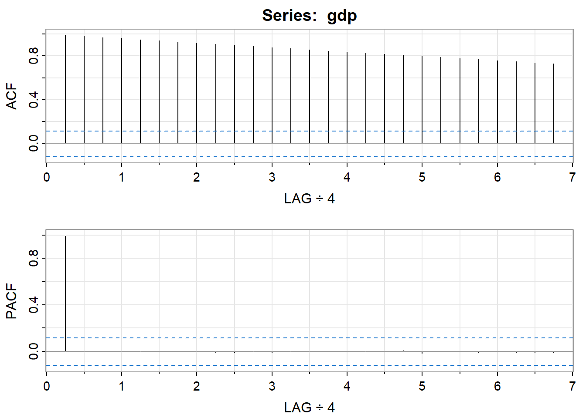
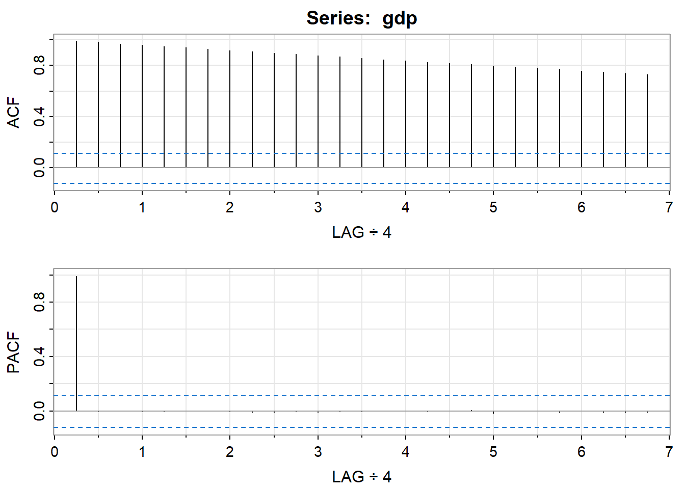
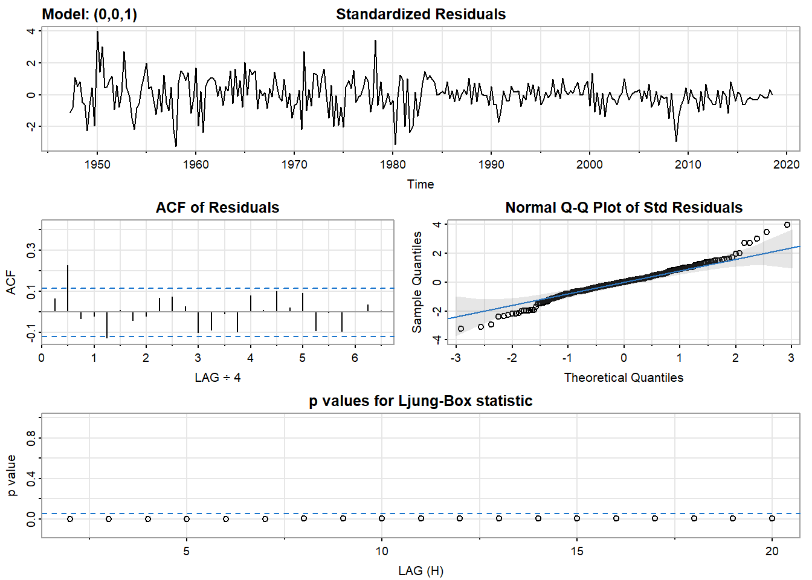
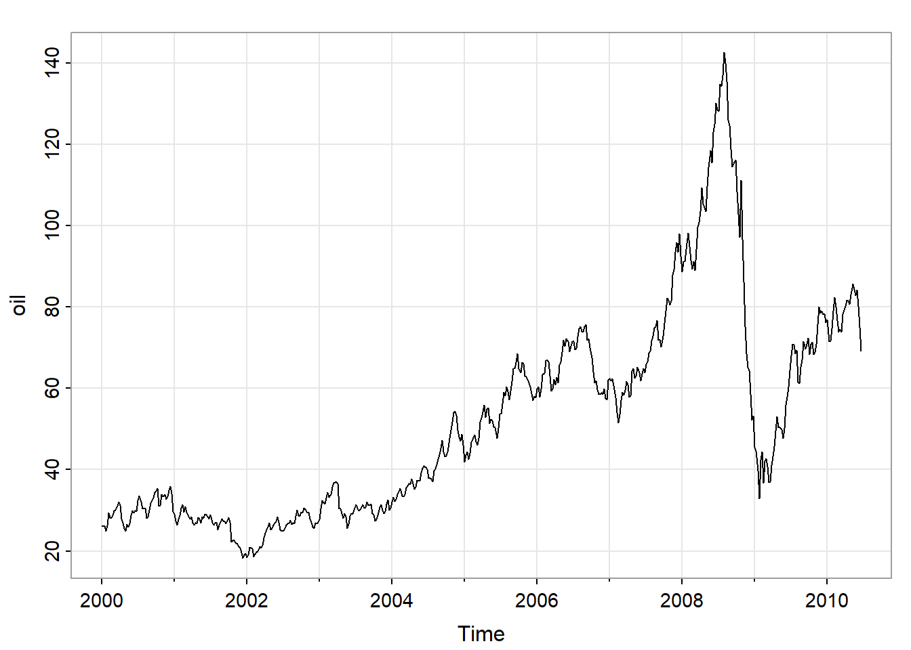
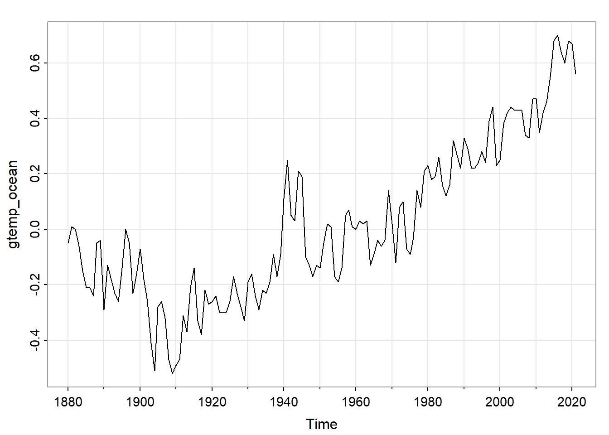
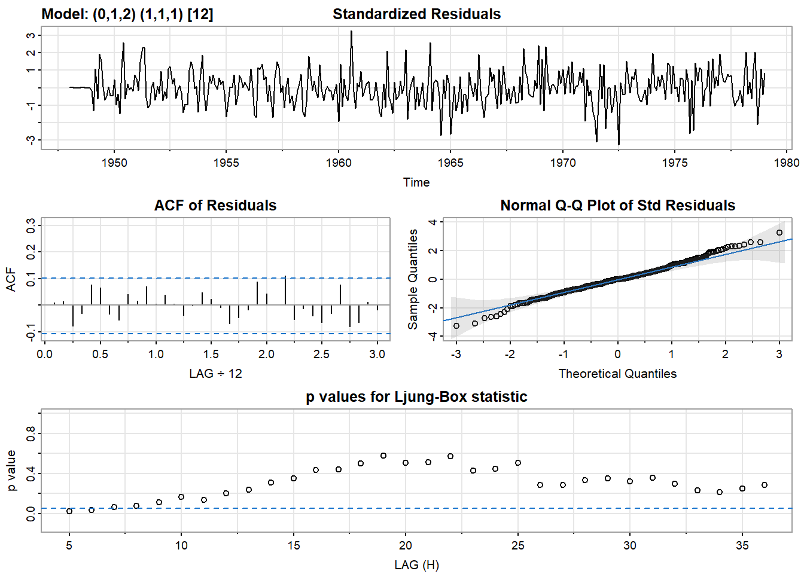

Chapter 5 第五章作业
5.1 5.1 冰川纹层数据与EWMA
在\(\lambda=0.25,0.50,0.75\)的不同情况下计算EWMA，并且在同一图形上绘制EWMA和时间数据数据：
x <- log(varve[1:100])
x25 <- HoltWinters(x, alpha = 0.75, beta = FALSE, gamma = FALSE)
x50 <- HoltWinters(x, alpha = 0.50, beta = FALSE, gamma = FALSE)
x75 <- HoltWinters(x, alpha = 0.25, beta = FALSE, gamma = FALSE)
x25_fit <- x25$fit[, 1]
x50_fit <- x50$fit[, 1]
x75_fit <- x75$fit[, 1]
df <- data.frame(
x = seq_along(x)[1:length(x)-1],
y = x[1:length(x)-1],
x25 = x25_fit,
x50 = x50_fit,
x75 = x75_fit
)
ggplot(df, aes(x = x, y = y)) +
geom_point(color = "black", shape = 1) +
geom_line(aes(y = y, color = "Original Data" ))+
geom_line(aes(y = x25, color = "0.25"), linetype = "solid") +
geom_line(aes(y = x50, color = "0.50"), linetype = "solid") +
geom_line(aes(y = x75, color = "0.75"), linetype = "solid") +
labs(ylab = "log(varve)") 
5.2 5.2 美国GDP序列分析
首先，绘制GDP时间序列的时序图以及ACF和PACF：
 

## [,1] [,2] [,3] [,4] [,5] [,6] [,7] [,8] [,9] [,10] [,11] [,12] [,13]
## ACF 0.99 0.98 0.97 0.96 0.95 0.94 0.93 0.92 0.91 0.90 0.89 0.88 0.87
## PACF 0.99 0.00 0.00 -0.01 0.00 0.00 0.00 -0.01 -0.01 -0.01 -0.01 -0.01 -0.01
## [,14] [,15] [,16] [,17] [,18] [,19] [,20] [,21] [,22] [,23] [,24] [,25]
## ACF 0.86 0.85 0.84 0.83 0.82 0.81 0.80 0.79 0.78 0.77 0.76 0.75
## PACF -0.01 0.00 0.00 -0.01 0.00 0.00 -0.02 0.00 0.00 -0.01 0.00 -0.01
## [,26] [,27]
## ACF 0.74 0.73
## PACF -0.01 -0.01由于GDP数据具有明显的趋势性因此对数据进行一次差分，差分后再次绘制时序图：
dev.new()
tsplot(diff(log(gdp)), ylab="GNP Growth Rate", col=4)
abline(h = mean(diff(log(gdp))), col=6)对于差分后的数据，绘制其ACF与PACF：
## [,1] [,2] [,3] [,4] [,5] [,6] [,7] [,8] [,9] [,10] [,11] [,12] [,13]
## ACF 0.36 0.23 0.02 -0.06 -0.13 -0.03 -0.04 -0.01 0.08 0.10 0.02 -0.11 -0.11
## PACF 0.36 0.11 -0.11 -0.07 -0.08 0.07 -0.02 -0.02 0.10 0.04 -0.07 -0.16 -0.02
## [,14] [,15] [,16] [,17] [,18] [,19] [,20] [,21] [,22] [,23] [,24] [,25]
## ACF -0.05 -0.08 0.05 0.05 0.11 0.07 0.07 -0.07 -0.05 -0.09 -0.02 0.03
## PACF 0.08 -0.06 0.08 0.01 0.06 -0.02 -0.01 -0.07 0.03 -0.04 0.03 0.05
## [,26] [,27]
## ACF 0.03 0.06
## PACF -0.04 0.03对数据拟合不同的模型，观察不同模型的拟合情况：
## initial value -4.672826
## iter 2 value -4.735845
## iter 3 value -4.756484
## iter 4 value -4.756533
## iter 5 value -4.756533
## iter 6 value -4.756533
## iter 6 value -4.756533
## iter 6 value -4.756533
## final value -4.756533
## converged
## initial value -4.754958
## iter 2 value -4.754969
## iter 3 value -4.754970
## iter 4 value -4.754973
## iter 5 value -4.754973
## iter 5 value -4.754973
## iter 5 value -4.754973
## final value -4.754973
## converged## $fit
##
## Call:
## arima(x = xdata, order = c(p, d, q), seasonal = list(order = c(P, D, Q), period = S),
## xreg = xmean, include.mean = FALSE, transform.pars = trans, fixed = fixed,
## optim.control = list(trace = trc, REPORT = 1, reltol = tol))
##
## Coefficients:
## ar1 ar2 ar3 xmean
## 0.3331 0.1489 -0.1122 0.0077
## s.e. 0.0587 0.0613 0.0588 0.0008
##
## sigma^2 estimated as 7.406e-05: log likelihood = 954.11, aic = -1898.21
##
## $degrees_of_freedom
## [1] 282
##
## $ttable
## Estimate SE t.value p.value
## ar1 0.3331 0.0587 5.6759 0.0000
## ar2 0.1489 0.0613 2.4283 0.0158
## ar3 -0.1122 0.0588 -1.9069 0.0575
## xmean 0.0077 0.0008 9.5617 0.0000
##
## $AIC
## [1] -6.637105
##
## $AICc
## [1] -6.636607
##
## $BIC
## [1] -6.573189## initial value -4.672758
## iter 2 value -4.716609
## iter 3 value -4.723220
## iter 4 value -4.723481
## iter 5 value -4.723483
## iter 5 value -4.723483
## iter 5 value -4.723483
## final value -4.723483
## converged
## initial value -4.723444
## iter 1 value -4.723444
## final value -4.723444
## converged
## $fit
##
## Call:
## arima(x = xdata, order = c(p, d, q), seasonal = list(order = c(P, D, Q), period = S),
## xreg = xmean, include.mean = FALSE, transform.pars = trans, fixed = fixed,
## optim.control = list(trace = trc, REPORT = 1, reltol = tol))
##
## Coefficients:
## ma1 xmean
## 0.2687 0.0077
## s.e. 0.0470 0.0007
##
## sigma^2 estimated as 7.891e-05: log likelihood = 945.09, aic = -1884.18
##
## $degrees_of_freedom
## [1] 284
##
## $ttable
## Estimate SE t.value p.value
## ma1 0.2687 0.0470 5.7155 0
## xmean 0.0077 0.0007 11.5865 0
##
## $AIC
## [1] -6.588031
##
## $AICc
## [1] -6.587883
##
## $BIC
## [1] -6.549682## [1] 0.330 0.109 0.036 0.012 0.004 0.001 0.000 0.000 0.000 0.000从Ljung-Box统计量的检验结果来看，AR(3)模型也具有较好的残差性质。
从AIC，AICc，BIC的角度看（越小越好），因此更加倾向于AR(3)模型。
因此，综合考虑起来，对于差分后的数据选择模型AR(3)，那么对于原始数据，选择的模型为ARIMA(3,1,0)。
5.3 5.3 原油数据分析
绘制时间序列的时序图，由于数据具有趋势性，考虑进行一次差分，差分后数据不再具有明显的趋势性。


其次，确定模型的阶数，按照题目要求，无需拟合含季节项的ARIMA模型：
## Series: oil
## ARIMA(1,1,2)
##
## Coefficients:
## ar1 ma1 ma2
## 0.8943 -0.7337 -0.0724
## s.e. 0.0483 0.0658 0.0465
##
## sigma^2 = 6.431: log likelihood = -1276.68
## AIC=2561.35 AICc=2561.43 BIC=2578.55## [,1] [,2] [,3] [,4] [,5] [,6] [,7] [,8] [,9] [,10] [,11] [,12] [,13] [,14]
## ACF 0.18 0.06 0.11 0.05 0.08 0.04 0.03 0.19 0.09 0.07 0.08 0.04 -0.04 0.05
## PACF 0.18 0.03 0.10 0.02 0.06 0.01 0.01 0.18 0.02 0.04 0.02 0.01 -0.09 0.05
## [,15] [,16] [,17] [,18] [,19] [,20] [,21] [,22] [,23] [,24] [,25] [,26]
## ACF 0.00 -0.07 0.02 0.06 -0.04 -0.08 -0.08 0.03 -0.07 -0.08 -0.13 -0.02
## PACF -0.03 -0.10 0.03 0.04 -0.07 -0.09 -0.03 0.05 -0.07 -0.01 -0.12 0.02
## [,27] [,28] [,29] [,30] [,31] [,32] [,33] [,34] [,35] [,36] [,37] [,38]
## ACF -0.15 -0.09 0.01 -0.05 -0.06 -0.07 -0.06 -0.01 -0.14 -0.01 -0.02 -0.02
## PACF -0.13 0.01 0.05 -0.02 0.00 -0.05 0.02 0.02 -0.08 0.05 -0.01 0.04
## [,39] [,40] [,41] [,42] [,43] [,44] [,45] [,46] [,47] [,48] [,49] [,50]
## ACF 0.00 -0.02 -0.10 -0.08 -0.02 0.02 0.03 0.01 0.04 0.05 -0.02 -0.03
## PACF 0.01 -0.03 -0.11 -0.03 0.03 0.02 0.06 -0.02 0.04 -0.02 0.03 -0.04
## [,51] [,52] [,53] [,54] [,55] [,56] [,57] [,58] [,59] [,60] [,61] [,62]
## ACF -0.05 -0.08 -0.04 -0.04 0.03 0.01 -0.13 -0.02 -0.09 -0.01 -0.07 0.03
## PACF -0.08 -0.10 -0.03 -0.05 0.01 -0.01 -0.16 0.01 -0.07 0.05 -0.06 0.07
## [,63] [,64] [,65] [,66] [,67] [,68] [,69] [,70] [,71] [,72] [,73] [,74]
## ACF -0.01 -0.03 -0.04 0.05 0.02 -0.03 -0.07 -0.01 -0.03 -0.04 -0.01 0.00
## PACF -0.02 0.00 -0.01 0.08 0.02 -0.04 -0.04 0.00 -0.01 -0.04 -0.02 -0.01
## [,75] [,76] [,77] [,78] [,79] [,80] [,81] [,82] [,83] [,84] [,85] [,86]
## ACF 0 -0.03 0.00 0.06 0.04 0.01 -0.02 -0.01 0.03 0.03 -0.01 0.03
## PACF 0 -0.06 -0.02 0.03 0.04 -0.01 -0.03 -0.05 0.05 -0.08 -0.01 0.01
## [,87] [,88] [,89] [,90] [,91] [,92] [,93] [,94] [,95] [,96] [,97] [,98]
## ACF 0.04 -0.02 0.01 -0.02 0 0.06 0.07 0.02 0.04 0.06 0.00 0.01
## PACF 0.05 -0.09 -0.01 -0.01 0 -0.02 0.07 -0.04 0.02 0.03 -0.01 -0.01
## [,99] [,100] [,101] [,102] [,103] [,104] [,105] [,106] [,107] [,108]
## ACF 0.04 0.05 0.01 -0.01 -0.01 0.03 0.00 -0.01 0.03 0.03
## PACF 0.07 0.02 -0.07 0.00 -0.02 0.00 -0.03 0.03 -0.01 0.03
## [,109] [,110] [,111] [,112] [,113] [,114] [,115] [,116] [,117] [,118]
## ACF 0.05 0.05 0.06 0.04 0.01 0.01 0.00 -0.02 0.00 0.01
## PACF -0.01 0.02 0.01 0.05 -0.04 0.01 -0.03 -0.03 -0.04 0.00
## [,119] [,120] [,121] [,122] [,123] [,124] [,125] [,126] [,127] [,128]
## ACF 0.00 0.01 0 0.04 -0.02 -0.05 -0.07 0.01 0.00 -0.02
## PACF 0.04 0.01 0 -0.01 0.00 -0.02 -0.06 0.00 0.05 -0.03
## [,129] [,130] [,131] [,132] [,133] [,134] [,135] [,136] [,137] [,138]
## ACF 0.02 0.02 -0.05 -0.01 -0.02 -0.02 -0.04 -0.06 -0.05 0.02
## PACF 0.01 0.01 -0.02 0.00 -0.01 0.02 0.01 -0.03 -0.03 0.02
## [,139] [,140] [,141] [,142] [,143] [,144] [,145] [,146] [,147] [,148]
## ACF -0.01 0.01 0.01 0.01 -0.01 -0.01 0.01 -0.01 -0.02 0
## PACF 0.02 0.02 -0.03 0.03 -0.01 0.00 0.00 0.00 0.00 0
## [,149] [,150] [,151] [,152] [,153] [,154] [,155] [,156] [,157] [,158]
## ACF -0.01 -0.01 0.01 0.02 0.04 0.01 -0.02 0.03 0.02 -0.02
## PACF -0.03 0.01 0.02 0.04 0.02 0.05 -0.04 0.02 -0.01 -0.06
## [,159] [,160] [,161] [,162] [,163] [,164] [,165] [,166] [,167] [,168]
## ACF 0.01 0.04 -0.01 0.03 -0.01 -0.03 0.01 -0.01 -0.02 0.00
## PACF 0.01 0.02 -0.01 0.00 0.01 -0.03 0.03 -0.04 0.02 0.02
## [,169] [,170] [,171] [,172] [,173] [,174] [,175] [,176] [,177] [,178]
## ACF -0.02 -0.02 -0.01 -0.02 -0.02 0.03 -0.01 -0.01 0.02 0.02
## PACF 0.03 -0.04 0.00 0.00 0.00 0.00 0.00 -0.01 0.01 0.02
## [,179] [,180] [,181] [,182] [,183] [,184] [,185] [,186] [,187] [,188]
## ACF -0.02 -0.04 -0.04 0.05 -0.03 -0.03 0.03 -0.01 0.00 0.02
## PACF -0.01 0.00 0.02 0.05 -0.05 0.03 0.01 -0.04 0.02 0.02
## [,189] [,190] [,191] [,192] [,193] [,194] [,195] [,196] [,197] [,198]
## ACF -0.03 -0.03 0.00 0.02 0.03 0.01 0.00 0.07 -0.01 -0.03
## PACF -0.06 -0.07 0.02 0.02 0.02 0.02 0.02 0.03 -0.02 0.00
## [,199] [,200] [,201] [,202] [,203] [,204] [,205] [,206] [,207] [,208]
## ACF 0.01 0.02 0.00 0.00 -0.04 0.00 0.05 0.03 0.04 0.02
## PACF -0.01 -0.01 0.01 -0.01 -0.04 -0.01 0.05 0.00 0.03 0.00根据ACF、PACF的绘图结果，以及函数auto.arima得到的结果，考虑以下三种模型：
## initial value 0.952571
## iter 2 value 0.942301
## iter 3 value 0.937016
## iter 4 value 0.936980
## iter 5 value 0.936974
## iter 6 value 0.936920
## iter 7 value 0.936798
## iter 8 value 0.936348
## iter 9 value 0.936163
## iter 10 value 0.935594
## iter 11 value 0.934155
## iter 12 value 0.932933
## iter 13 value 0.932770
## iter 14 value 0.932398
## iter 15 value 0.930981
## iter 16 value 0.930759
## iter 17 value 0.929725
## iter 18 value 0.928816
## iter 19 value 0.928770
## iter 20 value 0.928759
## iter 21 value 0.928732
## iter 22 value 0.928703
## iter 23 value 0.928683
## iter 24 value 0.928676
## iter 25 value 0.928674
## iter 26 value 0.928673
## iter 27 value 0.928673
## iter 27 value 0.928673
## iter 27 value 0.928673
## final value 0.928673
## converged
## initial value 0.927798
## iter 2 value 0.927797
## iter 3 value 0.927797
## iter 4 value 0.927797
## iter 5 value 0.927797
## iter 6 value 0.927797
## iter 7 value 0.927797
## iter 7 value 0.927797
## iter 7 value 0.927797
## final value 0.927797
## converged
## $fit
##
## Call:
## arima(x = xdata, order = c(p, d, q), seasonal = list(order = c(P, D, Q), period = S),
## xreg = constant, transform.pars = trans, fixed = fixed, optim.control = list(trace = trc,
## REPORT = 1, reltol = tol))
##
## Coefficients:
## ar1 ma1 ma2 constant
## 0.8933 -0.7330 -0.0725 0.0643
## s.e. 0.0488 0.0662 0.0465 0.1964
##
## sigma^2 estimated as 6.394: log likelihood = -1276.62, aic = 2563.25
##
## $degrees_of_freedom
## [1] 540
##
## $ttable
## Estimate SE t.value p.value
## ar1 0.8933 0.0488 18.2933 0.0000
## ma1 -0.7330 0.0662 -11.0722 0.0000
## ma2 -0.0725 0.0465 -1.5597 0.1194
## constant 0.0643 0.1964 0.3276 0.7434
##
## $AIC
## [1] 4.711854
##
## $AICc
## [1] 4.71199
##
## $BIC
## [1] 4.751366## initial value 0.951657
## iter 2 value 0.932292
## iter 3 value 0.931893
## iter 4 value 0.931868
## iter 5 value 0.931866
## iter 6 value 0.931866
## iter 7 value 0.931866
## iter 8 value 0.931866
## iter 8 value 0.931866
## iter 8 value 0.931866
## final value 0.931866
## converged
## initial value 0.931909
## iter 2 value 0.931909
## iter 2 value 0.931909
## iter 2 value 0.931909
## final value 0.931909
## converged## $fit
##
## Call:
## arima(x = xdata, order = c(p, d, q), seasonal = list(order = c(P, D, Q), period = S),
## xreg = constant, transform.pars = trans, fixed = fixed, optim.control = list(trace = trc,
## REPORT = 1, reltol = tol))
##
## Coefficients:
## ma1 ma2 ma3 constant
## 0.1664 0.0336 0.0919 0.0739
## s.e. 0.0431 0.0414 0.0417 0.1406
##
## sigma^2 estimated as 6.448: log likelihood = -1278.86, aic = 2567.72
##
## $degrees_of_freedom
## [1] 540
##
## $ttable
## Estimate SE t.value p.value
## ma1 0.1664 0.0431 3.8631 0.0001
## ma2 0.0336 0.0414 0.8111 0.4177
## ma3 0.0919 0.0417 2.2012 0.0281
## constant 0.0739 0.1406 0.5261 0.5990
##
## $AIC
## [1] 4.720078
##
## $AICc
## [1] 4.720214
##
## $BIC
## [1] 4.75959## initial value 0.952571
## iter 2 value 0.942681
## iter 3 value 0.937165
## iter 4 value 0.937152
## iter 5 value 0.937039
## iter 6 value 0.936783
## iter 7 value 0.934747
## iter 8 value 0.933927
## iter 9 value 0.933726
## iter 10 value 0.933677
## iter 11 value 0.933316
## iter 12 value 0.932849
## iter 13 value 0.932728
## iter 14 value 0.931401
## iter 15 value 0.931353
## iter 16 value 0.931266
## iter 17 value 0.931094
## iter 18 value 0.930978
## iter 19 value 0.930956
## iter 20 value 0.930950
## iter 21 value 0.930944
## iter 22 value 0.930941
## iter 23 value 0.930934
## iter 24 value 0.930933
## iter 25 value 0.930932
## iter 26 value 0.930930
## iter 27 value 0.930929
## iter 28 value 0.930929
## iter 28 value 0.930929
## final value 0.930929
## converged
## initial value 0.930069
## iter 2 value 0.930068
## iter 3 value 0.930068
## iter 4 value 0.930068
## iter 5 value 0.930068
## iter 6 value 0.930068
## iter 6 value 0.930068
## iter 6 value 0.930068
## final value 0.930068
## converged## $fit
##
## Call:
## arima(x = xdata, order = c(p, d, q), seasonal = list(order = c(P, D, Q), period = S),
## xreg = constant, transform.pars = trans, fixed = fixed, optim.control = list(trace = trc,
## REPORT = 1, reltol = tol))
##
## Coefficients:
## ar1 ma1 constant
## 0.8739 -0.7702 0.0629
## s.e. 0.0600 0.0779 0.1968
##
## sigma^2 estimated as 6.423: log likelihood = -1277.86, aic = 2563.72
##
## $degrees_of_freedom
## [1] 541
##
## $ttable
## Estimate SE t.value p.value
## ar1 0.8739 0.0600 14.5683 0.0000
## ma1 -0.7702 0.0779 -9.8897 0.0000
## constant 0.0629 0.1968 0.3198 0.7493
##
## $AIC
## [1] 4.712719
##
## $AICc
## [1] 4.712801
##
## $BIC
## [1] 4.7443295.4 5.4 陆地温度数据
绘制时间序列的时序图，由于数据具有趋势性，考虑进行一次差分，差分后数据不再具有明显的趋势性。


根据ACF、PACF的绘图结果，以及函数auto.arima得到的结果，可以选择模型为ARIMA(0,1,1)。
## [,1] [,2] [,3] [,4] [,5] [,6] [,7] [,8] [,9] [,10] [,11] [,12]
## ACF -0.41 -0.01 -0.17 0.18 -0.08 -0.01 -0.02 0.13 -0.16 0.17 -0.09 0.02
## PACF -0.41 -0.22 -0.33 -0.08 -0.11 -0.13 -0.10 0.05 -0.13 0.11 0.05 -0.01
## [,13] [,14] [,15] [,16] [,17] [,18] [,19] [,20] [,21] [,22]
## ACF -0.05 0.03 0.06 -0.10 0.04 0.08 -0.14 0.12 -0.08 0.15
## PACF 0.03 -0.02 0.07 -0.05 0.01 0.09 -0.10 0.07 0.00 0.13## Series: gtemp_land
## ARIMA(0,1,1) with drift
##
## Coefficients:
## ma1 drift
## -0.7023 0.0139
## s.e. 0.0601 0.0044
##
## sigma^2 = 0.03049: log likelihood = 46.68
## AIC=-87.35 AICc=-87.18 BIC=-78.51因此，可以拟合模型，并且进行检验:
## initial value -1.579037
## iter 2 value -1.707300
## iter 3 value -1.730190
## iter 4 value -1.744969
## iter 5 value -1.749548
## iter 6 value -1.751354
## iter 7 value -1.751897
## iter 8 value -1.752066
## iter 9 value -1.752339
## iter 10 value -1.752344
## iter 11 value -1.752344
## iter 11 value -1.752344
## final value -1.752344
## converged
## initial value -1.749940
## iter 2 value -1.749961
## iter 3 value -1.749966
## iter 4 value -1.749973
## iter 4 value -1.749973
## iter 4 value -1.749973
## final value -1.749973
## converged## $fit
##
## Call:
## arima(x = xdata, order = c(p, d, q), seasonal = list(order = c(P, D, Q), period = S),
## xreg = constant, transform.pars = trans, fixed = fixed, optim.control = list(trace = trc,
## REPORT = 1, reltol = tol))
##
## Coefficients:
## ma1 constant
## -0.7023 0.0139
## s.e. 0.0601 0.0044
##
## sigma^2 estimated as 0.03005: log likelihood = 46.68, aic = -87.35
##
## $degrees_of_freedom
## [1] 139
##
## $ttable
## Estimate SE t.value p.value
## ma1 -0.7023 0.0601 -11.6793 0.0000
## constant 0.0139 0.0044 3.1382 0.0021
##
## $AIC
## [1] -0.6195152
##
## $AICc
## [1] -0.6188985
##
## $BIC
## [1] -0.5567756从Ljung-Box统计量的检验结果来看，模型也具有较好的残差性质。
5.5 5.5 海洋温度数据
绘制时间序列的时序图，由于数据具有趋势性，考虑进行一次差分，差分后数据不再具有明显的趋势性。

根据ACF、PACF的绘图结果，以及函数auto.arima得到的结果，可以选择模型为ARIMA(1,1,3)。
## Series: gtemp_ocean
## ARIMA(1,1,3)
##
## Coefficients:
## ar1 ma1 ma2 ma3
## -0.9258 0.9190 -0.5010 -0.5120
## s.e. 0.0554 0.0912 0.0906 0.0803
##
## sigma^2 = 0.007738: log likelihood = 144.29
## AIC=-278.59 AICc=-278.14 BIC=-263.84
## [,1] [,2] [,3] [,4] [,5] [,6] [,7] [,8] [,9] [,10] [,11] [,12]
## ACF -0.04 -0.44 0.01 0.14 -0.06 -0.07 0.03 0.05 -0.11 0.05 0.04 -0.07
## PACF -0.04 -0.44 -0.03 -0.07 -0.09 -0.05 -0.04 0.01 -0.14 0.07 -0.07 -0.03
## [,13] [,14] [,15] [,16] [,17] [,18] [,19] [,20] [,21] [,22]
## ACF -0.06 0.09 -0.03 -0.05 -0.03 0.18 0.06 -0.12 0.05 0.03
## PACF -0.07 0.03 -0.10 -0.01 -0.10 0.16 0.05 0.03 0.13 -0.03因此，可以拟合模型，并且进行检验:
## initial value -1.578713
## iter 2 value -1.703207
## iter 3 value -1.717012
## iter 4 value -1.735429
## iter 5 value -1.746726
## iter 6 value -1.751436
## iter 7 value -1.751677
## iter 8 value -1.752187
## iter 9 value -1.753434
## iter 10 value -1.757103
## iter 11 value -1.757729
## iter 12 value -1.758429
## iter 13 value -1.758949
## iter 14 value -1.759725
## iter 15 value -1.759875
## iter 16 value -1.759939
## iter 17 value -1.760158
## iter 18 value -1.760161
## iter 19 value -1.760163
## iter 20 value -1.760168
## iter 21 value -1.760170
## iter 22 value -1.760171
## iter 23 value -1.760171
## iter 23 value -1.760171
## final value -1.760171
## converged
## initial value -1.763590
## iter 2 value -1.763605
## iter 3 value -1.763621
## iter 4 value -1.763647
## iter 5 value -1.763686
## iter 6 value -1.763755
## iter 7 value -1.763972
## iter 8 value -1.764121
## iter 9 value -1.764311
## iter 10 value -1.764348
## iter 11 value -1.764350
## iter 12 value -1.764351
## iter 12 value -1.764351
## final value -1.764351
## converged
## $fit
##
## Call:
## arima(x = xdata, order = c(p, d, q), seasonal = list(order = c(P, D, Q), period = S),
## xreg = constant, transform.pars = trans, fixed = fixed, optim.control = list(trace = trc,
## REPORT = 1, reltol = tol))
##
## Coefficients:
## ar1 ma1 ma2 ma3 constant
## -0.9176 0.3081 -0.6233 -0.1471 0.0138
## s.e. 0.1037 0.1293 0.1012 0.0827 0.0041
##
## sigma^2 estimated as 0.02919: log likelihood = 48.7, aic = -85.41
##
## $degrees_of_freedom
## [1] 136
##
## $ttable
## Estimate SE t.value p.value
## ar1 -0.9176 0.1037 -8.8486 0.0000
## ma1 0.3081 0.1293 2.3823 0.0186
## ma2 -0.6233 0.1012 -6.1578 0.0000
## ma3 -0.1471 0.0827 -1.7787 0.0775
## constant 0.0138 0.0041 3.3451 0.0011
##
## $AIC
## [1] -0.6057187
##
## $AICc
## [1] -0.6025666
##
## $BIC
## [1] -0.4802395从Ljung-Box统计量的检验结果来看，模型也具有较好的残差性质。
5.6 5.6 二氧化硫序列
绘制时间序列的时序图，由于数据具有趋势性，考虑进行一次差分，差分后数据不再具有明显的趋势性。
其次，确定模型的阶数，按照题目要求，无需拟合含季节项的ARIMA模型：
## Series: so2
## ARIMA(1,1,2)
##
## Coefficients:
## ar1 ma1 ma2
## -0.8146 -0.0705 -0.6178
## s.e. 0.1122 0.1250 0.1108
##
## sigma^2 = 0.7809: log likelihood = -655.81
## AIC=1319.63 AICc=1319.71 BIC=1336.54## [,1] [,2] [,3] [,4] [,5] [,6] [,7] [,8] [,9] [,10] [,11] [,12]
## ACF -0.54 0.13 -0.15 0.09 -0.02 0.00 -0.03 0.05 -0.05 0.09 -0.11 0.03
## PACF -0.54 -0.24 -0.28 -0.19 -0.12 -0.11 -0.12 -0.04 -0.07 0.05 -0.01 -0.06
## [,13] [,14] [,15] [,16] [,17] [,18] [,19] [,20] [,21] [,22] [,23] [,24]
## ACF 0.05 -0.07 0.06 -0.08 0.08 -0.05 0.07 -0.06 0.04 -0.11 0.14 -0.11
## PACF 0.05 -0.04 -0.01 -0.09 -0.06 -0.08 0.00 -0.03 0.01 -0.13 -0.03 -0.06
## [,25] [,26] [,27] [,28] [,29] [,30] [,31] [,32] [,33] [,34] [,35] [,36]
## ACF 0.10 -0.07 0.06 -0.05 -0.01 0.04 -0.03 -0.01 0.02 -0.01 0.03 0.00
## PACF -0.02 -0.01 0.02 0.01 -0.05 0.02 0.00 -0.03 -0.02 -0.02 0.01 0.03
## [,37] [,38] [,39] [,40] [,41] [,42] [,43] [,44] [,45] [,46] [,47] [,48]
## ACF -0.06 0.08 -0.08 0.11 -0.17 0.14 -0.05 -0.01 0.03 -0.06 0.03 0.02
## PACF -0.07 -0.02 -0.06 0.02 -0.11 -0.06 -0.02 -0.10 -0.01 -0.09 -0.07 -0.04
## [,49] [,50] [,51] [,52] [,53] [,54] [,55] [,56] [,57] [,58] [,59] [,60]
## ACF -0.03 0.01 0.04 -0.04 0.02 -0.07 0.13 -0.08 -0.02 0.10 -0.09 0.03
## PACF -0.04 -0.08 0.04 0.00 0.00 -0.06 0.04 0.06 -0.09 0.09 0.00 -0.02
## [,61] [,62] [,63] [,64] [,65] [,66] [,67] [,68] [,69] [,70] [,71] [,72]
## ACF -0.01 -0.01 0.04 -0.08 0.04 0.02 -0.02 0.03 -0.01 -0.03 0.07 -0.09
## PACF -0.02 -0.02 -0.01 -0.05 -0.10 -0.03 -0.02 -0.05 0.04 -0.06 0.08 -0.01
## [,73] [,74] [,75] [,76] [,77] [,78] [,79] [,80] [,81] [,82] [,83] [,84]
## ACF 0.05 -0.05 0.06 -0.01 -0.02 0.05 -0.11 0.08 0.01 -0.06 0.08 -0.08
## PACF 0.00 -0.05 -0.02 0.01 0.01 0.05 -0.07 -0.02 0.01 -0.07 0.03 -0.02
## [,85] [,86] [,87] [,88] [,89] [,90] [,91] [,92] [,93] [,94] [,95] [,96]
## ACF 0.08 -0.07 0.05 -0.02 -0.02 0.05 -0.03 -0.01 0.03 -0.02 0.03 -0.03
## PACF -0.02 -0.04 0.00 -0.02 -0.05 -0.01 -0.01 -0.01 -0.01 -0.01 0.02 0.01
## [,97] [,98] [,99] [,100] [,101] [,102] [,103] [,104] [,105] [,106] [,107]
## ACF -0.03 0.04 0.02 -0.02 0.01 -0.03 0.04 -0.04 0.04 -0.02 0.00
## PACF -0.04 -0.07 0.06 -0.06 -0.01 -0.03 -0.02 -0.03 0.01 0.00 0.03
## [,108] [,109] [,110] [,111] [,112] [,113] [,114] [,115] [,116] [,117]
## ACF -0.02 0.04 -0.05 0.05 -0.09 0.13 -0.09 0.05 -0.02 -0.03
## PACF -0.03 0.04 -0.01 -0.02 -0.02 0.00 0.00 0.04 0.03 -0.03
## [,118] [,119] [,120] [,121] [,122] [,123] [,124] [,125] [,126] [,127]
## ACF 0.10 -0.09 0.01 0.01 -0.03 0.06 -0.09 0.10 -0.06 0.00
## PACF 0.08 0.05 -0.02 0.04 -0.03 0.02 -0.07 0.04 -0.03 -0.02
## [,128] [,129] [,130] [,131] [,132] [,133] [,134] [,135] [,136] [,137]
## ACF 0.02 0.04 -0.08 0.04 0.01 0.00 -0.04 0.04 -0.01 0.00
## PACF -0.01 0.12 0.00 0.02 0.05 0.01 -0.04 -0.01 -0.04 -0.02
## [,138] [,139] [,140] [,141] [,142] [,143] [,144] [,145] [,146] [,147]
## ACF 0.06 -0.06 -0.06 0.10 -0.04 0.01 -0.02 0.00 0.04 -0.06
## PACF 0.03 0.03 -0.08 -0.02 0.01 -0.03 -0.01 -0.01 0.01 0.00
## [,148] [,149] [,150] [,151] [,152] [,153] [,154] [,155] [,156] [,157]
## ACF 0.03 -0.01 0.00 0.02 0.00 0.00 0.02 -0.06 0.05 -0.06
## PACF -0.05 -0.03 -0.02 -0.03 0.01 0.04 0.05 0.00 -0.08 -0.07
## [,158] [,159] [,160] [,161] [,162] [,163] [,164] [,165] [,166] [,167]
## ACF 0.14 -0.10 0.01 -0.01 0.00 0.00 0.02 -0.01 -0.06 0.06
## PACF 0.06 0.09 0.00 -0.01 -0.01 -0.02 0.05 0.06 -0.04 -0.02
## [,168] [,169] [,170] [,171] [,172] [,173] [,174] [,175] [,176] [,177]
## ACF 0.01 -0.03 0.01 0.04 -0.08 0.06 -0.08 0.08 -0.02 0.03
## PACF 0.01 -0.01 0.01 0.03 -0.02 0.02 -0.05 0.04 -0.05 0.00
## [,178] [,179] [,180] [,181] [,182] [,183] [,184] [,185] [,186] [,187]
## ACF -0.04 -0.02 0.02 0.04 -0.03 0.01 -0.01 -0.06 0.08 -0.03
## PACF 0.02 -0.03 -0.07 -0.02 0.06 0.02 0.01 -0.04 0.00 0.04
## [,188] [,189] [,190] [,191] [,192] [,193] [,194] [,195] [,196] [,197]
## ACF -0.03 0.03 0.00 -0.01 -0.03 0.04 0.05 -0.10 0.09 -0.11
## PACF -0.05 0.00 0.02 0.02 -0.07 -0.02 0.01 0.02 -0.01 -0.06
## [,198] [,199] [,200] [,201] [,202] [,203] [,204] [,205] [,206] [,207]
## ACF 0.10 -0.07 0.10 -0.08 0.03 -0.02 0.04 -0.08 0.07 -0.04
## PACF -0.03 -0.07 0.04 0.00 0.04 0.00 0.05 -0.03 0.00 -0.02
## [,208]
## ACF 0.04
## PACF -0.01根据ACF、PACF的绘图结果，以及函数auto.arima得到的结果，可以选择模型为ARIMA(1,1,2)。因此可以拟合模型并进行检验：
## initial value 0.161610
## iter 2 value 0.012216
## iter 3 value -0.095221
## iter 4 value -0.116285
## iter 5 value -0.121413
## iter 6 value -0.121645
## iter 7 value -0.122190
## iter 8 value -0.122471
## iter 9 value -0.122499
## iter 10 value -0.122644
## iter 11 value -0.122663
## iter 12 value -0.122691
## iter 13 value -0.122740
## iter 14 value -0.122787
## iter 15 value -0.123095
## iter 16 value -0.124040
## iter 17 value -0.124892
## iter 18 value -0.125445
## iter 19 value -0.125640
## iter 20 value -0.125751
## iter 21 value -0.125773
## iter 22 value -0.125849
## iter 23 value -0.125924
## iter 24 value -0.126063
## iter 25 value -0.126090
## iter 26 value -0.126094
## iter 27 value -0.126094
## iter 27 value -0.126094
## iter 27 value -0.126094
## final value -0.126094
## converged
## initial value -0.125534
## iter 2 value -0.125536
## iter 3 value -0.125538
## iter 4 value -0.125538
## iter 5 value -0.125538
## iter 6 value -0.125540
## iter 7 value -0.125542
## iter 8 value -0.125545
## iter 9 value -0.125546
## iter 10 value -0.125546
## iter 10 value -0.125546
## final value -0.125546
## converged
## $fit
##
## Call:
## arima(x = xdata, order = c(p, d, q), seasonal = list(order = c(P, D, Q), period = S),
## xreg = constant, transform.pars = trans, fixed = fixed, optim.control = list(trace = trc,
## REPORT = 1, reltol = tol))
##
## Coefficients:
## ar1 ma1 ma2 constant
## -0.8147 -0.0708 -0.6185 -0.0024
## s.e. 0.1121 0.1249 0.1108 0.0068
##
## sigma^2 estimated as 0.7761: log likelihood = -655.75, aic = 1321.5
##
## $degrees_of_freedom
## [1] 503
##
## $ttable
## Estimate SE t.value p.value
## ar1 -0.8147 0.1121 -7.2681 0.0000
## ma1 -0.0708 0.1249 -0.5666 0.5712
## ma2 -0.6185 0.1108 -5.5794 0.0000
## constant -0.0024 0.0068 -0.3562 0.7218
##
## $AIC
## [1] 2.606509
##
## $AICc
## [1] 2.606666
##
## $BIC
## [1] 2.64821因此，可以在中建立模型并且预测得到4个95%的预测区间：
so2_model <- arima(so2, order = c(1, 1, 2))
prediction <- predict(so2_model,n.ahead = 4,interval = "prediction", level = 0.95)
lower_bound <- prediction$pred - 1.96 * prediction$se
upper_bound <- prediction$pred + 1.96 * prediction$se
prediction_interval <- cbind(lower_bound,prediction$pred,upper_bound)
prediction_interval## Time Series:
## Start = c(1979, 41)
## End = c(1979, 44)
## Frequency = 52
## lower_bound prediction$pred upper_bound
## 1979.769 0.10072141 1.827613 3.554505
## 1979.788 0.07333962 1.811609 3.549878
## 1979.808 0.04605221 1.824646 3.603239
## 1979.827 0.02042162 1.814026 3.6076315.7 5.7 国际航班乘客数据
绘制时间序列的时序图，由于数据具有趋势性，考虑进行一次差分，差分后数据不再具有明显的趋势性。
其次确定模型阶数：
## Series: AirPassengers
## ARIMA(2,1,1)(0,1,0)[12]
##
## Coefficients:
## ar1 ar2 ma1
## 0.5960 0.2143 -0.9819
## s.e. 0.0888 0.0880 0.0292
##
## sigma^2 = 132.3: log likelihood = -504.92
## AIC=1017.85 AICc=1018.17 BIC=1029.35## [,1] [,2] [,3] [,4] [,5] [,6] [,7] [,8] [,9] [,10] [,11] [,12]
## ACF 0.3 -0.10 -0.24 -0.30 -0.09 -0.08 -0.09 -0.29 -0.19 -0.10 0.28 0.83
## PACF 0.3 -0.21 -0.16 -0.22 0.01 -0.19 -0.15 -0.45 -0.23 -0.55 -0.13 0.57
## [,13] [,14] [,15] [,16] [,17] [,18] [,19] [,20] [,21] [,22] [,23] [,24]
## ACF 0.28 -0.11 -0.22 -0.23 -0.06 -0.07 -0.09 -0.30 -0.16 -0.08 0.26 0.70
## PACF -0.15 -0.17 0.07 0.06 0.01 -0.08 0.04 -0.09 0.00 -0.01 -0.04 -0.04
## [,25] [,26] [,27] [,28] [,29] [,30] [,31] [,32] [,33] [,34] [,35] [,36]
## ACF 0.26 -0.10 -0.20 -0.17 -0.07 -0.04 -0.08 -0.25 -0.16 -0.05 0.20 0.58
## PACF -0.03 -0.04 0.02 -0.06 -0.13 0.01 0.03 0.07 -0.13 0.09 -0.12 -0.01
## [,37] [,38] [,39] [,40] [,41] [,42] [,43] [,44] [,45] [,46] [,47] [,48]
## ACF 0.23 -0.11 -0.13 -0.12 -0.05 -0.03 -0.08 -0.23 -0.14 -0.03 0.15 0.49
## PACF 0.00 -0.08 0.09 -0.01 0.03 0.02 -0.02 0.00 0.05 0.00 0.00 0.02根据ACF、PACF的绘图结果，以及函数auto.arima得到的结果，可以选择模型为SARIMA(2,1,1,0,1,0)[12]。因此可以拟合模型并进行检验：
## initial value 2.517519
## iter 2 value 2.509697
## iter 3 value 2.467921
## iter 4 value 2.466885
## iter 5 value 2.466822
## iter 6 value 2.466820
## iter 7 value 2.466818
## iter 8 value 2.466573
## iter 9 value 2.466534
## iter 10 value 2.466448
## iter 11 value 2.466431
## iter 12 value 2.465905
## iter 13 value 2.462991
## iter 14 value 2.455334
## iter 15 value 2.447759
## iter 16 value 2.446231
## iter 17 value 2.434390
## iter 18 value 2.433031
## iter 19 value 2.431071
## iter 20 value 2.429169
## iter 21 value 2.428820
## iter 22 value 2.424214
## iter 23 value 2.422934
## iter 24 value 2.420119
## iter 25 value 2.415841
## iter 26 value 2.413134
## iter 27 value 2.411637
## iter 28 value 2.409041
## iter 28 value 2.409041
## iter 29 value 2.407667
## iter 30 value 2.406729
## iter 30 value 2.406729
## iter 31 value 2.405219
## iter 32 value 2.403385
## iter 32 value 2.403385
## iter 33 value 2.401642
## iter 33 value 2.401642
## iter 34 value 2.401351
## iter 35 value 2.401318
## iter 35 value 2.401318
## iter 36 value 2.401218
## iter 37 value 2.400815
## iter 37 value 2.400815
## iter 38 value 2.400753
## iter 38 value 2.400753
## iter 39 value 2.400730
## iter 40 value 2.400725
## iter 41 value 2.399877
## iter 41 value 2.399877
## iter 42 value 2.399851
## iter 42 value 2.399851
## iter 43 value 2.399842
## iter 43 value 2.399842
## iter 44 value 2.399839
## iter 44 value 2.399839
## iter 45 value 2.399838
## iter 45 value 2.399838
## iter 46 value 2.399838
## iter 46 value 2.399838
## iter 47 value 2.399838
## iter 47 value 2.399838
## iter 47 value 2.399838
## final value 2.399838
## converged
## initial value 2.454840
## iter 2 value 2.440932
## iter 3 value 2.438265
## iter 4 value 2.437665
## iter 5 value 2.436460
## iter 6 value 2.435972
## iter 7 value 2.435600
## iter 8 value 2.435494
## iter 9 value 2.435473
## iter 10 value 2.435458
## iter 11 value 2.435451
## iter 12 value 2.435443
## iter 13 value 2.435442
## iter 14 value 2.435442
## iter 14 value 2.435442
## iter 14 value 2.435442
## final value 2.435442
## converged## $fit
##
## Call:
## arima(x = xdata, order = c(p, d, q), seasonal = list(order = c(P, D, Q), period = S),
## include.mean = !no.constant, transform.pars = trans, fixed = fixed, optim.control = list(trace = trc,
## REPORT = 1, reltol = tol))
##
## Coefficients:
## ar1 ar2 ma1
## 0.5960 0.2143 -0.9819
## s.e. 0.0888 0.0880 0.0292
##
## sigma^2 estimated as 129.3: log likelihood = -504.92, aic = 1017.85
##
## $degrees_of_freedom
## [1] 128
##
## $ttable
## Estimate SE t.value p.value
## ar1 0.5960 0.0888 6.7101 0.0000
## ar2 0.2143 0.0880 2.4359 0.0162
## ma1 -0.9819 0.0292 -33.6239 0.0000
##
## $AIC
## [1] 7.76983
##
## $AICc
## [1] 7.771272
##
## $BIC
## [1] 7.8576225.9 5.9 鸡肉价格数据
绘制时间序列的时序图，由于数据具有趋势性，考虑进行一次差分，差分后数据不再具有明显的趋势性。
其次确定模型阶数：
## Series: chicken
## ARIMA(2,1,1)(0,0,1)[12] with drift
##
## Coefficients:
## ar1 ar2 ma1 sma1 drift
## 1.2933 -0.5375 -0.4019 0.2756 0.2518
## s.e. 0.2220 0.1542 0.2569 0.0692 0.1428
##
## sigma^2 = 0.396: log likelihood = -169.51
## AIC=351.01 AICc=351.5 BIC=370.14## [,1] [,2] [,3] [,4] [,5] [,6] [,7] [,8] [,9] [,10] [,11] [,12]
## ACF 0.72 0.39 0.09 -0.07 -0.16 -0.20 -0.27 -0.23 -0.11 0.09 0.26 0.33
## PACF 0.72 -0.29 -0.14 0.03 -0.10 -0.06 -0.19 0.12 0.10 0.16 0.09 0.00
## [,13] [,14] [,15] [,16] [,17] [,18] [,19] [,20] [,21] [,22] [,23] [,24]
## ACF 0.20 0.07 -0.03 -0.10 -0.19 -0.25 -0.29 -0.20 -0.08 0.08 0.16 0.18
## PACF -0.22 0.03 0.03 -0.11 -0.09 0.01 -0.03 0.07 -0.04 0.06 -0.05 0.02
## [,25] [,26] [,27] [,28] [,29] [,30] [,31] [,32] [,33] [,34] [,35] [,36]
## ACF 0.08 -0.06 -0.21 -0.31 -0.40 -0.40 -0.33 -0.18 0.02 0.20 0.30 0.35
## PACF -0.14 -0.19 -0.13 -0.06 -0.08 -0.05 0.01 0.03 0.10 0.02 -0.01 0.09
## [,37] [,38] [,39] [,40] [,41] [,42] [,43] [,44] [,45] [,46] [,47] [,48]
## ACF 0.26 0.13 -0.02 -0.14 -0.23 -0.21 -0.18 -0.11 -0.03 0.08 0.21 0.33
## PACF -0.12 0.01 -0.01 -0.05 0.02 0.12 -0.05 -0.13 -0.07 0.01 0.14 0.05根据ACF、PACF的绘图结果，以及函数auto.arima得到的结果，可以选择模型为SARIMA(2,1,1,0,0,1)[12]。因此可以拟合模型并进行检验：
## initial value 0.001863
## iter 2 value -0.186345
## iter 3 value -0.335095
## iter 4 value -0.383350
## iter 5 value -0.449917
## iter 6 value -0.457049
## iter 7 value -0.458930
## iter 8 value -0.477713
## iter 9 value -0.479940
## iter 10 value -0.483436
## iter 11 value -0.484450
## iter 12 value -0.484732
## iter 13 value -0.484787
## iter 14 value -0.484878
## iter 15 value -0.484968
## iter 16 value -0.485043
## iter 17 value -0.485054
## iter 18 value -0.485055
## iter 19 value -0.485055
## iter 20 value -0.485056
## iter 21 value -0.485056
## iter 22 value -0.485056
## iter 22 value -0.485056
## iter 22 value -0.485056
## final value -0.485056
## converged
## initial value -0.471707
## iter 2 value -0.471845
## iter 3 value -0.471862
## iter 4 value -0.471876
## iter 5 value -0.471916
## iter 6 value -0.471951
## iter 7 value -0.471961
## iter 8 value -0.471966
## iter 9 value -0.471970
## iter 10 value -0.471973
## iter 11 value -0.471974
## iter 12 value -0.471974
## iter 12 value -0.471974
## final value -0.471974
## converged## $fit
##
## Call:
## arima(x = xdata, order = c(p, d, q), seasonal = list(order = c(P, D, Q), period = S),
## xreg = constant, transform.pars = trans, fixed = fixed, optim.control = list(trace = trc,
## REPORT = 1, reltol = tol))
##
## Coefficients:
## ar1 ar2 ma1 sma1 constant
## 1.2933 -0.5375 -0.4019 0.2756 0.2518
## s.e. 0.2220 0.1542 0.2569 0.0692 0.1428
##
## sigma^2 estimated as 0.3849: log likelihood = -169.51, aic = 351.01
##
## $degrees_of_freedom
## [1] 174
##
## $ttable
## Estimate SE t.value p.value
## ar1 1.2933 0.2220 5.8245 0.0000
## ar2 -0.5375 0.1542 -3.4849 0.0006
## ma1 -0.4019 0.2569 -1.5647 0.1195
## sma1 0.2756 0.0692 3.9809 0.0001
## constant 0.2518 0.1428 1.7641 0.0795
##
## $AIC
## [1] 1.960969
##
## $AICc
## [1] 1.962906
##
## $BIC
## [1] 2.067808利用拟合的季节性ARIMA模型预测未来12个月的鸡肉价格数据，并绘制在图中：
# 拟合ARIMA模型
chicken_model <- arima(chicken, order = c(2, 1, 1),
seasonal = list(order = c(0, 0, 1), period = 12))
# 对未来12个月进行预测
chicken_forecast <- predict(chicken_model, n.ahead = 12)
# 打印预测结果
print(chicken_forecast$pred)## Jan Feb Mar Apr May Jun Jul Aug
## 2016 111.1064
## 2017 109.8361 109.7608 109.5932 109.5923 109.6591 109.6571 109.5903
## Sep Oct Nov Dec
## 2016 110.7519 110.3998 110.0911 110.0052
## 20175.10 5.10 失业数据
绘制时间序列的时序图，由于数据具有趋势性，考虑进行一次差分，差分后数据不再具有明显的趋势性。
其次确定模型阶数：
## Series: UnempRate
## ARIMA(4,0,2)(2,1,2)[12]
##
## Coefficients:
## ar1 ar2 ar3 ar4 ma1 ma2 sar1 sar2
## 0.7625 0.9558 -0.6176 -0.1234 0.3117 -0.5419 -0.7769 0.0496
## s.e. 0.0504 0.1053 0.1076 0.0411 0.0504 0.1010 0.1181 0.0548
## sma1 sma2
## 0.0326 -0.6181
## s.e. 0.1164 0.0786
##
## sigma^2 = 0.05468: log likelihood = 26.25
## AIC=-30.49 AICc=-30.16 BIC=21.24## [,1] [,2] [,3] [,4] [,5] [,6] [,7] [,8] [,9] [,10] [,11] [,12] [,13]
## ACF 0.08 -0.12 -0.28 -0.09 0.24 -0.03 0.21 -0.11 -0.31 -0.17 0.06 0.76 0.03
## PACF 0.08 -0.13 -0.27 -0.07 0.20 -0.16 0.26 -0.08 -0.34 -0.08 0.09 0.66 -0.16
## [,14] [,15] [,16] [,17] [,18] [,19] [,20] [,21] [,22] [,23] [,24] [,25]
## ACF -0.19 -0.34 -0.13 0.19 -0.07 0.21 -0.13 -0.31 -0.17 0.04 0.75 0.02
## PACF -0.22 -0.14 -0.10 -0.06 -0.11 0.09 0.01 -0.08 0.03 -0.06 0.31 -0.05
## [,26] [,27] [,28] [,29] [,30] [,31] [,32] [,33] [,34] [,35] [,36] [,37]
## ACF -0.18 -0.32 -0.11 0.20 -0.05 0.20 -0.14 -0.30 -0.16 0.03 0.73 0.01
## PACF -0.05 -0.02 -0.01 -0.05 -0.05 -0.04 -0.08 -0.02 0.05 -0.08 0.18 -0.05
## [,38] [,39] [,40] [,41] [,42] [,43] [,44] [,45] [,46] [,47] [,48]
## ACF -0.16 -0.31 -0.11 0.18 -0.06 0.19 -0.14 -0.31 -0.17 0.05 0.73
## PACF 0.03 -0.04 -0.05 -0.10 -0.03 -0.03 -0.03 -0.05 -0.02 0.04 0.17根据ACF、PACF的绘图结果，以及函数auto.arima得到的结果，可以选择模型为SARIMA(4,0,2,2,1,2)[12]，因此可以拟合模型并进行检验：
## initial value 0.137272
## iter 2 value -0.866854
## iter 3 value -1.027240
## iter 4 value -1.261380
## iter 5 value -1.410876
## iter 6 value -1.457826
## iter 7 value -1.465913
## iter 8 value -1.466548
## iter 9 value -1.467989
## iter 10 value -1.468714
## iter 11 value -1.469424
## iter 12 value -1.470813
## iter 13 value -1.472047
## iter 14 value -1.474887
## iter 15 value -1.477945
## iter 16 value -1.480522
## iter 17 value -1.481351
## iter 18 value -1.483158
## iter 19 value -1.484128
## iter 20 value -1.484275
## iter 21 value -1.488574
## iter 22 value -1.489211
## iter 23 value -1.489745
## iter 24 value -1.490133
## iter 25 value -1.490195
## iter 26 value -1.490346
## iter 27 value -1.490474
## iter 28 value -1.490970
## iter 29 value -1.491588
## iter 30 value -1.492472
## iter 31 value -1.492793
## iter 32 value -1.492896
## iter 33 value -1.492944
## iter 34 value -1.493018
## iter 35 value -1.493241
## iter 36 value -1.493282
## iter 37 value -1.493298
## iter 38 value -1.493305
## iter 39 value -1.493318
## iter 40 value -1.493335
## iter 41 value -1.493341
## iter 42 value -1.493342
## iter 43 value -1.493342
## iter 44 value -1.493342
## iter 45 value -1.493342
## iter 46 value -1.493342
## iter 47 value -1.493342
## iter 47 value -1.493342
## final value -1.493342
## converged
## initial value -1.449112
## iter 2 value -1.449491
## iter 3 value -1.449500
## iter 4 value -1.450312
## iter 5 value -1.450432
## iter 6 value -1.450489
## iter 7 value -1.450496
## iter 8 value -1.450498
## iter 9 value -1.450500
## iter 10 value -1.450501
## iter 11 value -1.450501
## iter 12 value -1.450503
## iter 13 value -1.450507
## iter 14 value -1.450507
## iter 15 value -1.450507
## iter 16 value -1.450508
## iter 17 value -1.450509
## iter 18 value -1.450509
## iter 19 value -1.450511
## iter 20 value -1.450513
## iter 21 value -1.450518
## iter 22 value -1.450520
## iter 23 value -1.450533
## iter 24 value -1.450540
## iter 25 value -1.450574
## iter 26 value -1.450596
## iter 27 value -1.450628
## iter 28 value -1.450650
## iter 29 value -1.450670
## iter 30 value -1.450676
## iter 31 value -1.450731
## iter 32 value -1.450762
## iter 33 value -1.450771
## iter 34 value -1.450833
## iter 35 value -1.450868
## iter 36 value -1.450930
## iter 37 value -1.450946
## iter 38 value -1.450960
## iter 39 value -1.450979
## iter 40 value -1.450992
## iter 41 value -1.451001
## iter 42 value -1.451019
## iter 43 value -1.451055
## iter 44 value -1.451070
## iter 45 value -1.451081
## iter 46 value -1.451087
## iter 47 value -1.451090
## iter 48 value -1.451093
## iter 49 value -1.451094
## iter 50 value -1.451097
## iter 51 value -1.451111
## iter 52 value -1.451131
## iter 53 value -1.451186
## iter 54 value -1.451202
## iter 55 value -1.451218
## iter 56 value -1.451227
## iter 57 value -1.451238
## iter 58 value -1.451243
## iter 59 value -1.451244
## iter 60 value -1.451245
## iter 61 value -1.451247
## iter 62 value -1.451251
## iter 63 value -1.451256
## iter 64 value -1.451258
## iter 65 value -1.451258
## iter 66 value -1.451258
## iter 67 value -1.451258
## iter 68 value -1.451259
## iter 69 value -1.451259
## iter 70 value -1.451259
## iter 71 value -1.451259
## iter 71 value -1.451259
## iter 72 value -1.451259
## iter 72 value -1.451259
## iter 73 value -1.451259
## iter 74 value -1.451259
## iter 74 value -1.451259
## iter 74 value -1.451259
## final value -1.451259
## converged## $fit
##
## Call:
## arima(x = xdata, order = c(p, d, q), seasonal = list(order = c(P, D, Q), period = S),
## xreg = constant, transform.pars = trans, fixed = fixed, optim.control = list(trace = trc,
## REPORT = 1, reltol = tol))
##
## Coefficients:
## ar1 ar2 ar3 ar4 ma1 ma2 sar1 sar2
## 0.7688 0.9491 -0.6182 -0.1223 0.3050 -0.5430 -0.7766 0.0504
## s.e. 0.1686 0.0630 0.2838 0.1128 0.1463 0.2546 0.2845 0.1627
## sma1 sma2 constant
## 0.0320 -0.6194 0.0025
## s.e. 0.2194 0.0586 0.0057
##
## sigma^2 estimated as 0.05399: log likelihood = 26.34, aic = -28.68
##
## $degrees_of_freedom
## [1] 804
##
## $ttable
## Estimate SE t.value p.value
## ar1 0.7688 0.1686 4.5593 0.0000
## ar2 0.9491 0.0630 15.0752 0.0000
## ar3 -0.6182 0.2838 -2.1780 0.0297
## ar4 -0.1223 0.1128 -1.0844 0.2785
## ma1 0.3050 0.1463 2.0850 0.0374
## ma2 -0.5430 0.2546 -2.1325 0.0333
## sar1 -0.7766 0.2845 -2.7292 0.0065
## sar2 0.0504 0.1627 0.3100 0.7567
## sma1 0.0320 0.2194 0.1460 0.8840
## sma2 -0.6194 0.0586 -10.5772 0.0000
## constant 0.0025 0.0057 0.4434 0.6576
##
## $AIC
## [1] -0.03519297
##
## $AICc
## [1] -0.03478958
##
## $BIC
## [1] 0.03405642利用拟合的季节性ARIMA模型预测未来12个月的失业数据，并绘制在图中：
# 拟合ARIMA模型
UnempRate_model <- arima(UnempRate, order = c(4, 0, 2),
seasonal = list(order = c(2, 1, 2), period = 12))## Warning in log(s2): NaNs produced
## Warning in log(s2): NaNs produced# 对未来12个月进行预测
UnempRate_forecast <- predict(UnempRate_model, n.ahead = 12)
# 打印预测结果
print(UnempRate_forecast$pred)## Jan Feb Mar Apr May Jun Jul Aug
## 2016
## 2017 5.188054 5.064098 4.909005 4.449382 4.585190 5.086002 5.217041 5.042381
## Sep Oct Nov Dec
## 2016 4.477900
## 2017 4.824391 4.785977 4.7357905.11 5.11 美国出生数据
绘制时间序列的时序图，由于数据具有趋势性，考虑进行一次差分，差分后数据不再具有明显的趋势性。
其次确定模型阶数：
## Series: birth
## ARIMA(0,1,2)(1,1,1)[12]
##
## Coefficients:
## ma1 ma2 sar1 sma1
## -0.3984 -0.1632 0.1018 -0.8434
## s.e. 0.0512 0.0486 0.0713 0.0476
##
## sigma^2 = 46.1: log likelihood = -1204.93
## AIC=2419.86 AICc=2420.03 BIC=2439.29## [,1] [,2] [,3] [,4] [,5] [,6] [,7] [,8] [,9] [,10] [,11] [,12]
## ACF -0.32 0.16 -0.08 -0.19 0.09 -0.28 0.06 -0.19 -0.05 0.17 -0.26 0.82
## PACF -0.32 0.06 -0.01 -0.25 -0.03 -0.26 -0.17 -0.29 -0.35 -0.16 -0.59 0.57
## [,13] [,14] [,15] [,16] [,17] [,18] [,19] [,20] [,21] [,22] [,23] [,24]
## ACF -0.28 0.17 -0.07 -0.18 0.08 -0.28 0.07 -0.18 -0.05 0.16 -0.24 0.78
## PACF 0.13 0.11 0.13 0.09 0.00 0.00 0.05 0.04 -0.07 -0.10 -0.20 0.19
## [,25] [,26] [,27] [,28] [,29] [,30] [,31] [,32] [,33] [,34] [,35] [,36]
## ACF -0.27 0.19 -0.08 -0.17 0.07 -0.29 0.07 -0.15 -0.04 0.14 -0.24 0.75
## PACF 0.01 0.05 0.07 0.07 -0.02 -0.06 -0.02 0.09 0.03 -0.06 -0.16 0.03
## [,37] [,38] [,39] [,40] [,41] [,42] [,43] [,44] [,45] [,46] [,47] [,48]
## ACF -0.23 0.16 -0.08 -0.15 0.05 -0.25 0.06 -0.18 -0.03 0.15 -0.22 0.72
## PACF 0.08 -0.10 -0.03 0.07 -0.04 0.06 0.04 -0.07 -0.06 0.02 -0.04 0.10根据ACF、PACF的绘图结果，以及函数auto.arima得到的结果，可以选择模型为SARIMA(0,1,2,1,1,1)[12]，因此可以拟合模型并进行检验：
## initial value 2.221461
## iter 2 value 1.995611
## iter 3 value 1.959402
## iter 4 value 1.936261
## iter 5 value 1.915351
## iter 6 value 1.912728
## iter 7 value 1.911791
## iter 8 value 1.911667
## iter 9 value 1.911654
## iter 10 value 1.911654
## iter 10 value 1.911654
## final value 1.911654
## converged
## initial value 1.928810
## iter 2 value 1.928320
## iter 3 value 1.928119
## iter 4 value 1.928103
## iter 5 value 1.928095
## iter 6 value 1.928094
## iter 7 value 1.928094
## iter 7 value 1.928094
## iter 7 value 1.928094
## final value 1.928094
## converged
## $fit
##
## Call:
## arima(x = xdata, order = c(p, d, q), seasonal = list(order = c(P, D, Q), period = S),
## include.mean = !no.constant, transform.pars = trans, fixed = fixed, optim.control = list(trace = trc,
## REPORT = 1, reltol = tol))
##
## Coefficients:
## ma1 ma2 sar1 sma1
## -0.3984 -0.1632 0.1018 -0.8434
## s.e. 0.0512 0.0486 0.0713 0.0476
##
## sigma^2 estimated as 45.58: log likelihood = -1204.93, aic = 2419.86
##
## $degrees_of_freedom
## [1] 356
##
## $ttable
## Estimate SE t.value p.value
## ma1 -0.3984 0.0512 -7.7849 0.0000
## ma2 -0.1632 0.0486 -3.3599 0.0009
## sar1 0.1018 0.0713 1.4273 0.1544
## sma1 -0.8434 0.0476 -17.7108 0.0000
##
## $AIC
## [1] 6.721842
##
## $AICc
## [1] 6.722155
##
## $BIC
## [1] 6.775816利用拟合的季节性ARIMA模型预测未来12个月的出生数据，并绘制在图中：
# 拟合ARIMA模型
birth_model <- arima(birth, order = c(0, 1, 2),
seasonal = list(order = c(1, 1, 1), period = 12))
# 对未来12个月进行预测
birth_forecast <- predict(birth_model, n.ahead = 12)
# 打印预测结果
print(birth_forecast$pred)## Jan Feb Mar Apr May Jun Jul Aug
## 1979 258.2476 281.8175 263.3480 274.2731 270.5819 294.9579 302.9556
## 1980 275.9505
## Sep Oct Nov Dec
## 1979 295.8673 289.4151 273.2532 283.6455
## 19805.12 5.12 强生公司收益率
绘制时间序列的时序图，由于数据具有趋势性，考虑进行一次差分，差分后数据不再具有明显的趋势性。
其次确定模型阶数：
## Series: log(jj)
## ARIMA(2,0,0)(1,1,0)[4] with drift
##
## Coefficients:
## ar1 ar2 sar1 drift
## 0.2686 0.2855 -0.2695 0.0382
## s.e. 0.1137 0.1214 0.1212 0.0042
##
## sigma^2 = 0.007793: log likelihood = 82.47
## AIC=-154.95 AICc=-154.14 BIC=-143.04## [,1] [,2] [,3] [,4] [,5] [,6] [,7] [,8] [,9] [,10] [,11] [,12] [,13]
## ACF -0.51 0.07 -0.4 0.73 -0.37 0.00 -0.25 0.56 -0.28 -0.01 -0.22 0.45 -0.21
## PACF -0.51 -0.26 -0.7 0.27 0.16 -0.11 -0.01 0.11 0.05 0.12 -0.03 -0.03 0.04
## [,14] [,15] [,16] [,17] [,18] [,19] [,20]
## ACF -0.04 -0.15 0.35 -0.14 -0.08 -0.09 0.27
## PACF -0.08 -0.04 -0.04 -0.04 -0.06 -0.02 0.01根据ACF、PACF的绘图结果，以及函数auto.arima得到的结果，可以选择模型为SARIMA(2,2,0,1,1,0)[4]，因此可以拟合模型并进行检验：
## initial value -2.405347
## iter 2 value -2.484501
## iter 3 value -2.497205
## iter 4 value -2.498334
## iter 5 value -2.498401
## iter 6 value -2.498403
## iter 7 value -2.498403
## iter 7 value -2.498403
## iter 7 value -2.498403
## final value -2.498403
## converged
## initial value -2.446934
## iter 2 value -2.449248
## iter 3 value -2.449834
## iter 4 value -2.449862
## iter 5 value -2.449866
## iter 6 value -2.449866
## iter 7 value -2.449866
## iter 7 value -2.449866
## iter 7 value -2.449866
## final value -2.449866
## converged## $fit
##
## Call:
## arima(x = xdata, order = c(p, d, q), seasonal = list(order = c(P, D, Q), period = S),
## xreg = constant, transform.pars = trans, fixed = fixed, optim.control = list(trace = trc,
## REPORT = 1, reltol = tol))
##
## Coefficients:
## ar1 ar2 sar1 constant
## 0.2686 0.2855 -0.2695 0.0382
## s.e. 0.1137 0.1214 0.1212 0.0042
##
## sigma^2 estimated as 0.007403: log likelihood = 82.47, aic = -154.95
##
## $degrees_of_freedom
## [1] 76
##
## $ttable
## Estimate SE t.value p.value
## ar1 0.2686 0.1137 2.3616 0.0208
## ar2 0.2855 0.1214 2.3516 0.0213
## sar1 -0.2695 0.1212 -2.2236 0.0291
## constant 0.0382 0.0042 8.9990 0.0000
##
## $AIC
## [1] -1.936856
##
## $AICc
## [1] -1.930189
##
## $BIC
## [1] -1.787979利用拟合的季节性ARIMA模型预测未来4个季度的收益率，并绘制在图中：
# 拟合ARIMA模型
logjj_model <- arima(log(jj), order = c(2, 2, 0),
seasonal = list(order = c(1, 1, 0), period = 4))
# 对未来12个月进行预测
logjj_forecast <- predict(logjj_model, n.ahead = 4)
# 打印预测结果
print(logjj_forecast$pred)## Qtr1 Qtr2 Qtr3 Qtr4
## 1981 2.900503 2.830641 2.933700 2.600540